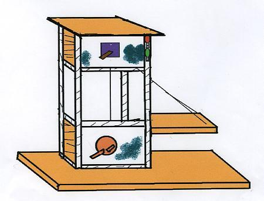
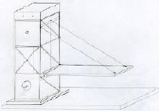
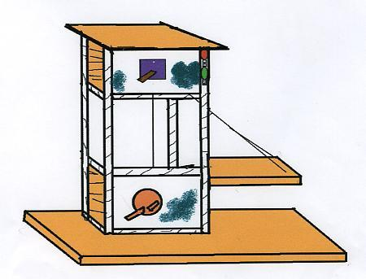
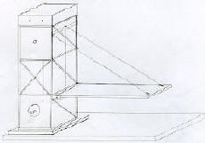
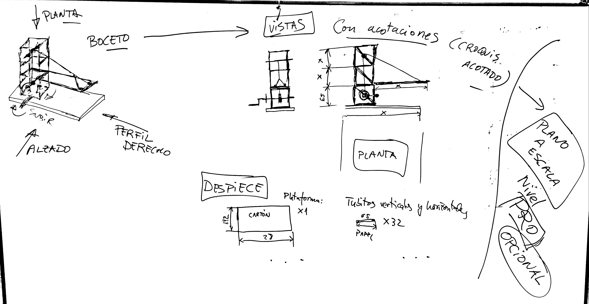

Ahora sí, por fín, nos toca DIBUJARRRRR!
A por ello...
 
Imágenes originales creadas por el autor
Ahora sí, por fín, nos toca DIBUJARRRRR!
A por ello...
 
Imágenes originales creadas por el autor
Vamos a por nuestro primer diseño (te dejo dos ideas en archivos adjuntos).
Dibuja un boceto y croquis a mano de tu puerta o anuncio y hazle una foto. Sube la imagen a esta tarea, pero no entregues aún.
Después crea una imagen en 3D lo más parecida posible con TINKERCAD (pregunta a tu profe cómo apuntarte a su clase) usando las acotaciones de tu croquis para diseñarlo.
Finalmente realiza una captura de pantalla de tu diseño y súbela a la tarea.
Sube tus diseños a la Unidad Compartida en Drive con tu grupo para que entre todos/as podáis elegir el más adecuado de cara a poder desarrollar la idea en vuestro PROYECTAZO.
Finalmente realiza una captura de pantalla de tu diseño y súbela a la tarea.
Te dejo un inicio de lo que podría ser tu diseño definitivo. Debe tener: Boceto, croquis acotado (pueden ser las vistas principales con acotaciones) y el despiece (para facilitar así la construcción y el reparo de tareas en el grupo):

También te dejo este tutorial de TinkerCad:
Que no se te olvide rellenar la ficha y entregar un enlace a la carpeta. Revisa si están todas las fichas ordenadas. Si no es así, habrá que renombrarlas para que se organicen solas.
Te recuerdo que es esencial para que retengas las cosas que vas aprendiendo. Y le viene muy bien a tu desarrollo intelectual y a tu comprensión lectora.
Obra publicada con Licencia Creative Commons Reconocimiento Compartir igual 4.0